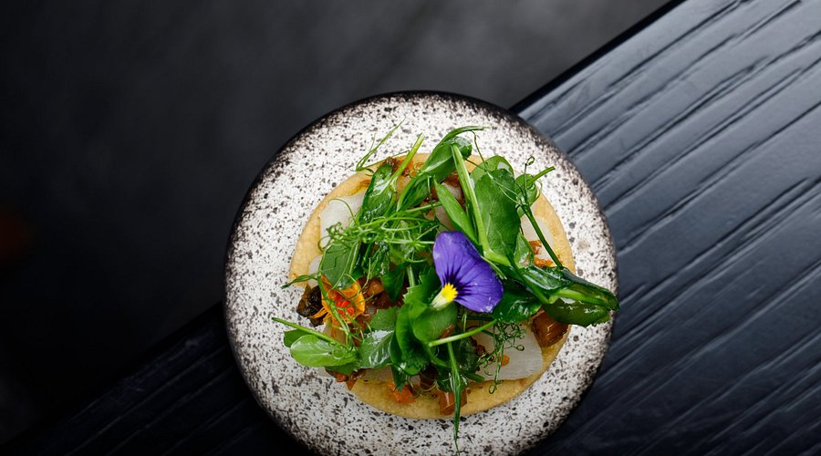

Masque Restaurant is one of Mumbai’s most talked-about fine-dining destinations, known for its ingredient-driven philosophy and refined tasting menu. Located in the city’s former industrial mill area, it blends modern design, seasonal ingredients, and creative presentation into one memorable dining experience.
Masque offers a 10-course chef’s tasting menu that changes with the seasons, making every visit unique. The restaurant focuses on local produce, bold flavors, and innovative techniques that transform Indian cuisine into a contemporary fine-dining journey.
The atmosphere is just as impressive as the food. With its moody interiors, artistic plating, and carefully designed service, Masque creates a premium experience that feels both luxurious and deeply rooted in Indian culinary identity.
For food lovers, Masque is more than a restaurant — it is a place where tradition and experimentation come together on every plate. From the first course to the final dessert, the dining experience is crafted to surprise, inspire, and satisfy.
Terms of Service
Privacy Policy
Refund Policy